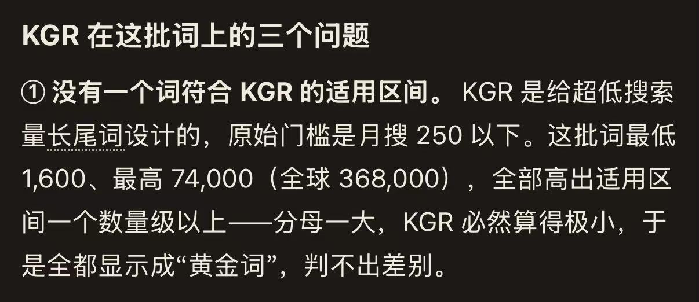
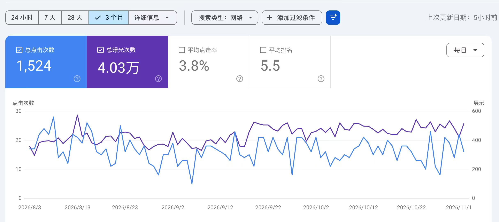

2026 年 11 月 5 日上午，罗夏把「哥飞 SEO Agent」对一批词的 KGR 判断转给哥飞本人核对：agent 认为这批词月搜 1,600 到 74,000，全部超出 KGR 的适用区间，KGR 判不出差别。哥飞确认 KGR 只适合低搜索量的长尾词，超级大词看 intitle 没有意义；但他同时指出 agent 说的「原始门槛 250」明显有误，让罗夏拿证据去质问。对话后半段，哥飞用自己一个已经放弃的站说明：瞄准有付费需求的中大词时，每天二三十次点击也能偶尔出单。

截图里 agent 的结论是「没有一个词符合 KGR 的适用区间」：KGR 是给超低搜索量长尾词设计的，原始门槛是月搜 250 以下；这批词最低 1,600、最高 74,000（全球 368,000），全部高出适用区间一个数量级以上——分母一大，KGR 必然算得极小，于是全都显示成「黄金词」，判不出差别。
KGR 的适用边界
KGR（Keyword Golden Ratio）= intitle 结果数 ÷ 月搜索量，比值越小，说明标题层面参与竞争的页面相对需求越少。词越大，分母越大，KGR 会被压到极小，所有词都变成「黄金词」，也就失去区分度。这正是 agent 与哥飞都认可的部分：KGR 适合低量长尾词，超级大词看 intitle 没有意义。
分歧在门槛数字。罗夏追问「搜索量大概多少以下比较准」，哥飞没有给替代区间，而是回头否定 agent 引用的「原始门槛 250」，让他带证据去质问。记录到此转向下一个话题，没有说明 250 具体错在哪，也没有回答随后提出的「intitle 是否要查美国区、IP 切到美国是否可行」。
对话之外补充核实：按 KGR 原始定义（Doug Cunnington）和哥飞社区公开的公式写法，250 指的确实是月搜索量门槛，KGR < 0.25 为低竞争。哥飞在对话里否定这个数字后没有展开，这里保持记录原样，不替他补结论。
日点击二三十的站也能出单
话题转到出单条件。哥飞的说法是：当你瞄准的是有付费需求的中大词时，即使一个每天只有二三十次点击的网站，也会时不时出单。他举的例子是自己一个已经放弃、完全不管的站，仍偶尔有 9.9 美元和 99 美元的订单。
两张截图对应这个例子：一张是 PayPal 新的订阅支付成功，套餐 99 美元；另一张是 GSC 过去三个月的表现——总点击 1,524 次、总曝光 4.03 万次、平均点击率 3.8%、平均排名 5.5，折算下来每天大约二十次点击，和「每天只有二三十点击」对得上。

对选词的实际意义
- KGR 用来筛低量长尾词；超级大词看 intitle 没有意义，KGR 会把它们一律算成「黄金词」。
- 「搜索量多少以下才准」这段对话没有给出答案；哥飞反而要求质疑 agent 引用的 250 门槛，并让罗夏拿证据去问。intitle 是否要查美国区，记录里也没有回答。
- 流量规模不是出单的唯一前提：有付费需求的中大词，日点击二三十的小站也能偶尔出单。
原始对话
2026年11月5日 10:56 至 11:06，2 位参与者，共 9 条消息。记录中的 3 张截图已按内容补在正文对应位置，这里保留原始图片文件名。